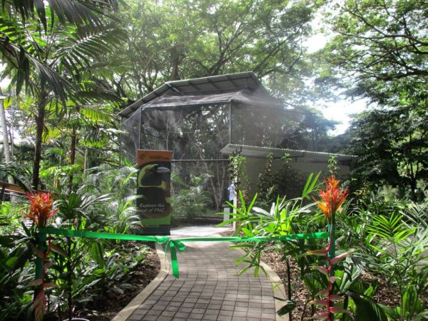
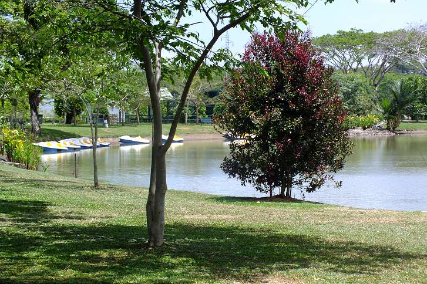
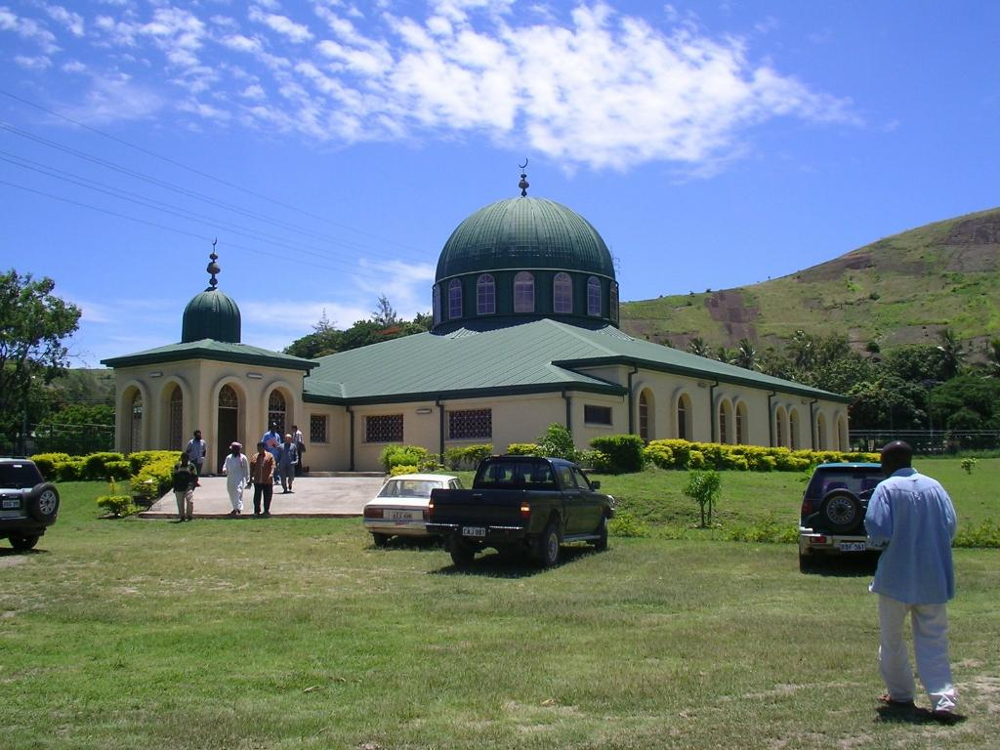

Port Moresby
Puerto Moresby es la capital de Papúa Nueva Guinea, y su mayor aglomeración de población contando su área metropolitana que se extiende por todo el Distrito Capital Nacional. La ciudad está situada en las costas del golfo de Papúa, en la costa sureste de la isla de Nueva Guinea. La ciudad es a su vez la capital de la provincia Central, de la que está rodeada en la región de Papúa, aunque realmente no pertenece a ésta ya que por sí sola forma el Distrito Capital Nacional.

Dominique: Esta ciudad es considerada la ciudad más peligrosa del mundo, según un
informe presentado por el programa de la ONU para los Asentamientos Humanos.
Los idiomas oficiales son el inglés, el tok pisin y el motu.
La moneda allí son las "kinas".
Port Moresby natural park: Si visitas esta ciudad no te puedes perder este parque repleto de animales y en plena naturaleza ¡Disfruta de un mini safari único!
National Parliament House: Un edificio muy impresionante. Diseñado por un arquitecto de Nueva Zelanda, incluye referencias al pasado de PNG utilizando paneles, obras de arte, etc. Incluye una magnífica colección de todas las mariposas y polillas PNG. La cámara de mutilación es impresionante.
Bomana War Cemetery: Una visita obligada si está visitando Port Moresby como turista o como viajero de negocios. Contiene los restos de algunos soldados muy jóvenes de Australia que murieron en la campaña de PNG de la Segunda Guerra Mundial.
National Museum and Art Gallery: Los museos son lugares maravillosos para visitar cuando estás lejos, puedes aprender mucho sobre la cultura y la gente y... ¡este no te lo puedes perder!
Port Moresby Mosque: Un gran lugar para la comunidad musulmana en Port Moresby. La mezquita en sí no es muy grande, pero la arquitectura es hermosa. El Muazzin tiene una voz increíble, el Adhan es muy espiritual.
